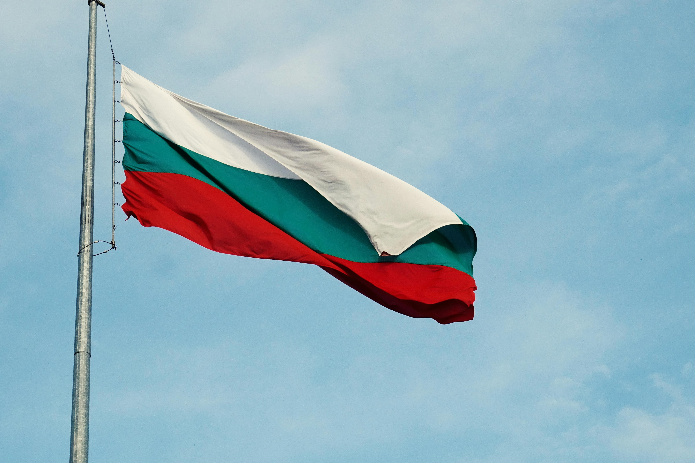
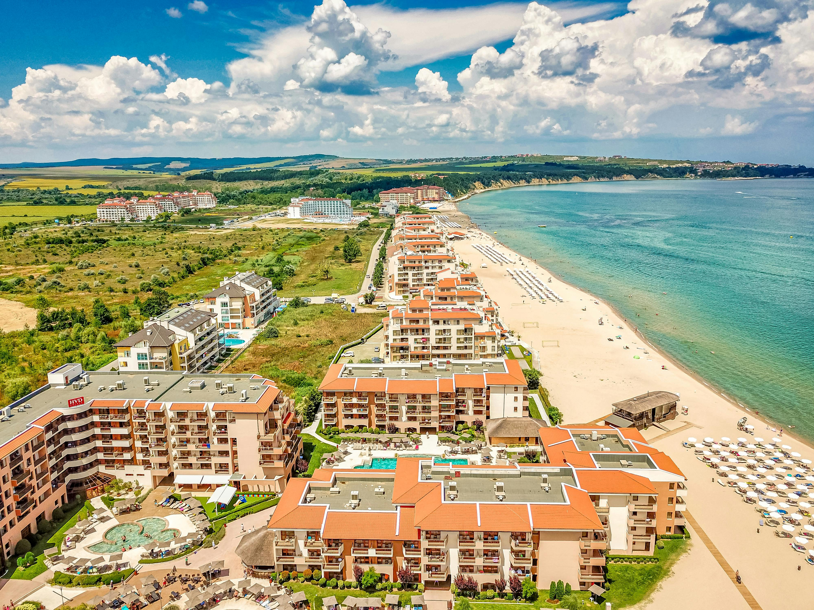

Sunny Beach, Bulgaria —
the family holiday that ended in total chaos
Our trip to Sunny Beach in 2000 was one of those classic late-90s family holidays that ended in complete and utter chaos. Bulgaria still felt very different from the Spain or Portugal holidays Irish families were used to — cheaper, rougher around the edges and still carrying a visible post-communist atmosphere. We had a week of Black Sea beaches, cheap ice cream, market stalls and a brilliant mountain day trip into rural Bulgaria. And then, on the final night, torrential rain hit, the hotel flooded, Nicola got stuck in the lift, and we ended up wading out with our trousers rolled up carrying bags through waterlogged corridors. Absolute disaster. Completely unforgettable.
Bulgaria at a glance
Useful things to know now
This story comes from 2000, but these are the practical basics for planning a modern Bulgaria trip.
Bulgaria then and now
Our holiday captures Sunny Beach at a particular moment. Bulgaria was still finding its feet after the end of communist rule, and the resort felt cheaper, rougher around the edges and far less polished than the familiar Spanish and Portuguese destinations Irish families knew.
🕰️ When we visited — 2000
Bulgaria was outside the European Union, used the Bulgarian lev and felt like a genuine adventure. Market stalls, enormous hotels, rural villages and the visible legacy of the communist era all formed part of the experience.
✨ Bulgaria today
Bulgaria joined the EU in 2007 and adopted the euro in 2026. Sunny Beach has expanded enormously and is now one of the best-known Black Sea resorts, so this page is our personal memory of 2000 rather than a review of the resort exactly as it is today.
Where is Sunny Beach?
Sunny Beach sits on Bulgaria's Black Sea coast, north of Burgas Airport and immediately beside the historic town of Nessebar. Click any location to zoom in.
The Bulgarian coast
Burgas • Sunny Beach • Nessebar




Sunny Beach in 2000 — cheap, busy and still rough around the edges
Sunny Beach was already becoming one of Bulgaria's best-known Black Sea resorts, but in 2000 it still felt very different from the slicker Mediterranean destinations. It had a developing-resort feel: big hotels, cheap restaurants, souvenir stalls, beach bars and a nightlife scene that was clearly growing fast.
Long sandy beaches and warm days spent in and out of the sea — the classic Sunny Beach experience.
Exactly the kind of thing everyone remembers from family holidays: ice cream every day because it was cheap and because you were on holidays.
Resort food, cheap dinners, kid-friendly menus and the sense that everything cost less than it would have in Western Europe.
Fake designer gear, sunglasses, souvenirs and the kind of market browsing that was basically an evening activity in itself.
Warm evening air, bright lights, bars, shops and the resort coming alive after dinner.
Sunny Beach was already becoming known for its nightlife, though it still felt rougher and less polished than the party resorts that came later.
The post-communist atmosphere we noticed even as teenagers
Bulgaria in 2000 still felt like a country in transition, only a decade after the fall of communism. Even as teenagers and kids, we could sense that it was different from Western Europe. The resort was geared towards tourists, but beyond it there were visible contrasts everywhere.
That was part of what made the trip memorable. Sunny Beach had the beach-holiday surface, but Bulgaria beyond the hotel zone felt older, poorer, more traditional and much less familiar than the holiday destinations we were used to.
The day trip that showed us rural Bulgaria
One of the highlights of the holiday was a day trip into the mountains, away from the tourist resorts. We travelled through little Bulgarian villages and saw a completely different side of the country: traditional crafts, old stone houses, horse carts and people living far more simply than we were used to in Ireland.
We saw horse carts on country roads, little mountain villages and a pace of life that felt completely different from the Black Sea resort strip.
Elderly women in headscarves selling homemade products made a huge impression — a reminder of how different rural Bulgaria felt at the time.
We visited local artisans and workshops where people were making pottery, wood carvings, embroidery and traditional crafts by hand.
The biblical rain, the flooded hotel and Nicola stuck in the lift
The part of the holiday nobody ever forgot was the final night. Out of nowhere, torrential rain hit Sunny Beach. Absolute biblical rain. The hotel started flooding and water began pouring through parts of the building.
Eventually everyone had to evacuate through floodwater. We rolled our trousers up and literally waded our way out of the hotel carrying bags and suitcases through waterlogged corridors and flooded streets.
The final memories of Bulgaria were not sunsets or beaches. They were soaked shoes, panic in the hotel lobby, flooded lifts, people scrambling through water and the sheer madness of trying to get out of the hotel during the storm.
The kind of sudden downpour that turns a normal holiday night into complete chaos.
Water pouring into parts of the building and everyone trying to work out what on earth was happening.
Terrifying at the time, legendary in the family retelling ever since.
Wading out through floodwater with bags and suitcases. Not exactly the brochure ending.
A final-night scramble through soaked corridors and flooded streets.
An absolute disaster at the time — but unforgettable, and exactly the kind of holiday story that gets retold forever.
Why Bulgaria became one of those holidays nobody forgot
Bulgaria was memorable because it had everything: a cheap Black Sea resort, a glimpse into rural post-communist Europe, a very different culture from home, and then a final-night disaster so dramatic it basically guaranteed the holiday would be retold forever.
Different from the Mediterranean holidays we knew, with long sandy beaches and a resort scene that was still developing.
Food, markets and resort spending all felt cheaper than Spain or Portugal at the time.
A completely different side of Bulgaria: horse carts, stone houses, traditional crafts and a slower way of life.
Only a decade after communism, Bulgaria still felt visibly different from Western Europe.
The kind of holiday chaos you never ask for but never forget.
Nicola getting stuck in the lift during a flood turned the trip from memorable into legendary.
Take a virtual drive around Burgas
Our Bulgaria holiday was based in Sunny Beach on the Black Sea coast, so Burgas is the perfect Drive From Home companion to this guide. Explore the nearby coastal city virtually and get a feel for the roads, streets and surroundings of this part of Bulgaria before your own trip.
Book Bulgaria tours through TourRadar
Bulgaria is far more than Sunny Beach — it has Black Sea resorts, mountain villages, monasteries, old towns, traditional crafts and Balkan history. TourRadar is a good place to browse organised Bulgaria itineraries.
Disclosure: This is an affiliate link. If you book through it we may earn a small commission at no extra cost to you.
Book Bulgaria activities — GetYourGuide
From Black Sea excursions and Nessebar visits to mountain tours, cultural experiences and city breaks, Bulgaria has far more variety than we appreciated back in 2000.
Disclosure: If you book through this link we may earn a small commission at no extra cost to you.
Browse Bulgaria hotels and experiences on Klook
Klook is handy for browsing Bulgaria hotels, transfers and activities if you are planning a Black Sea or wider Bulgaria trip.
Disclosure: This is an affiliate link. If you book through it we may earn a small commission at no extra cost to you.
Common questions
Bulgaria FAQ
What to pack for Bulgaria
Bulgaria packing essentials
For a Sunny Beach or wider Bulgaria trip, pack for beach days, resort evenings, possible mountain excursions and the very real chance of unpredictable weather.
Ideal for beach days, markets, mountain excursions and carrying water, snacks and layers.
View on Amazon →Useful for photos, maps, translation apps and keeping your phone alive on full-day excursions.
View on Amazon →Great for beach days, pool days and any sudden downpours. Bulgaria taught us not to underestimate rain.
View on Amazon →Perfect for promenades, markets, mountain villages and old streets — especially if you are doing a cultural day trip.
View on Amazon →Pack one. Seriously. Final-night hotel flood trauma has made us waterproof evangelists.
View on Amazon →Bulgaria uses European two-pin plugs, so a universal adaptor is handy for phones, cameras and everything else.
View on Amazon →Disclosure: These are Amazon affiliate links. If you buy through them we may earn a small commission at no extra cost to you.
More European resort and Eastern Europe guides
If you liked this Bulgaria memory, these nearby and similar travel stories are worth reading too.
Mallorca, Menorca and Ibiza — from teenage family holidays to grown-up sunsets.
Read the Balearics guide →A one-hour bus trip from Vienna into another post-communist capital city world.
Read the Slovakia guide →Medieval streets, Central European atmosphere and a completely different kind of city break.
Read the Prague guide →Planning your own Bulgaria trip?
Go for the Black Sea, the value, the mountain villages and the cultural contrasts — but pack waterproofs, avoid lifts during storms, and never underestimate the holiday story potential of total chaos.
Affiliate disclosure: if you book through our links we may earn a small commission at no cost to you. We only recommend places and experiences that fit our own travel style.